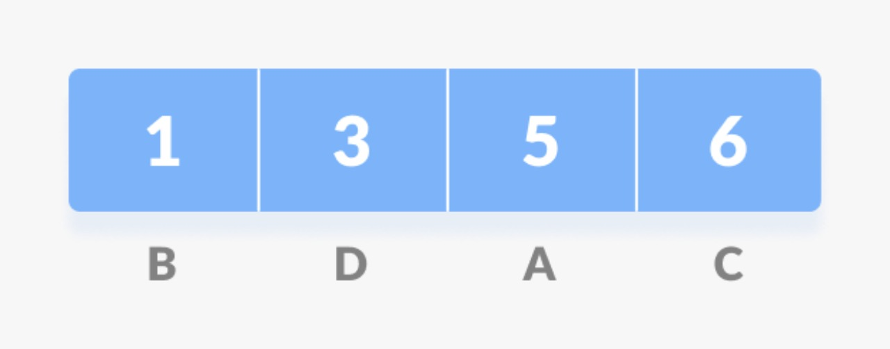
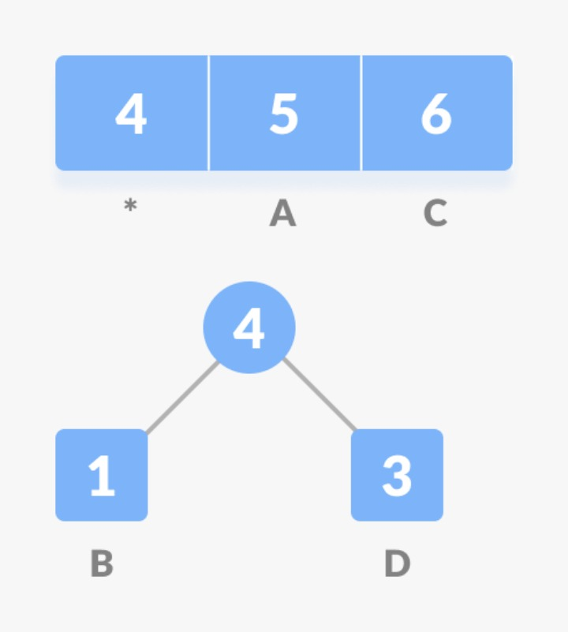
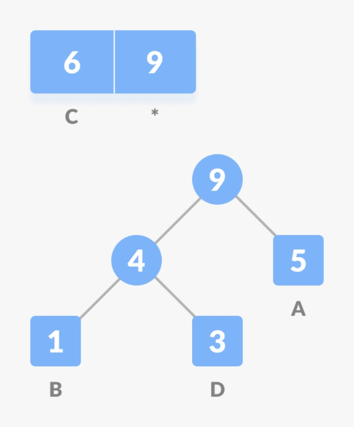
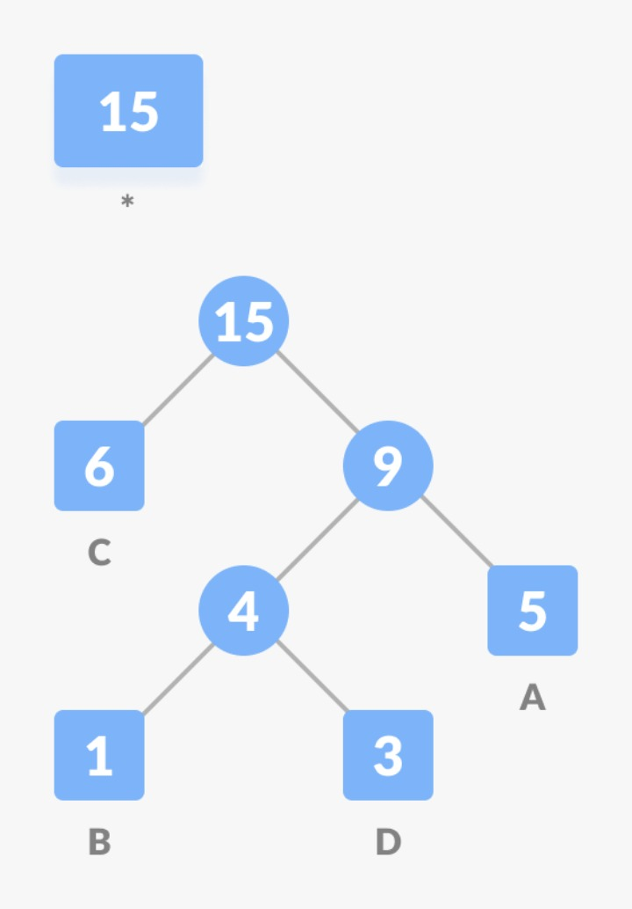
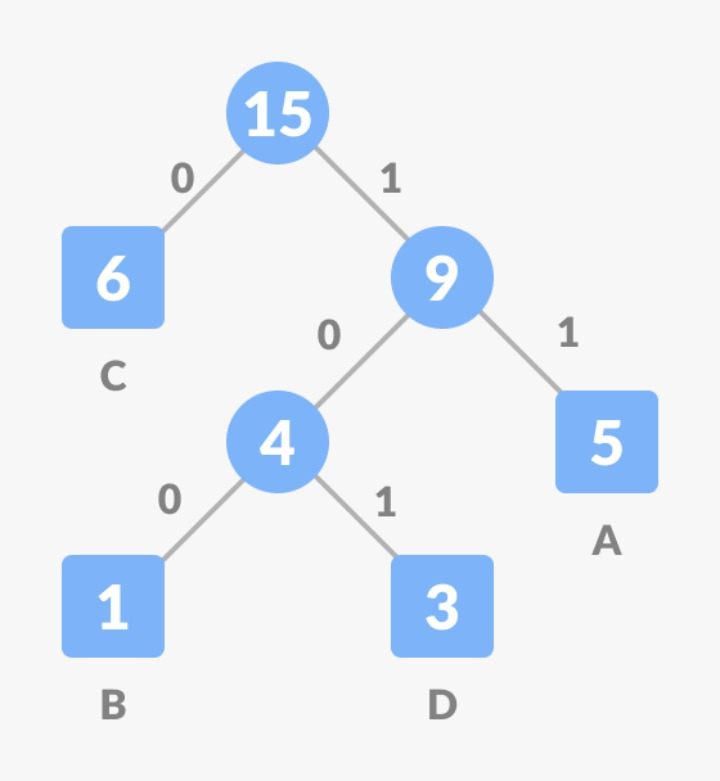
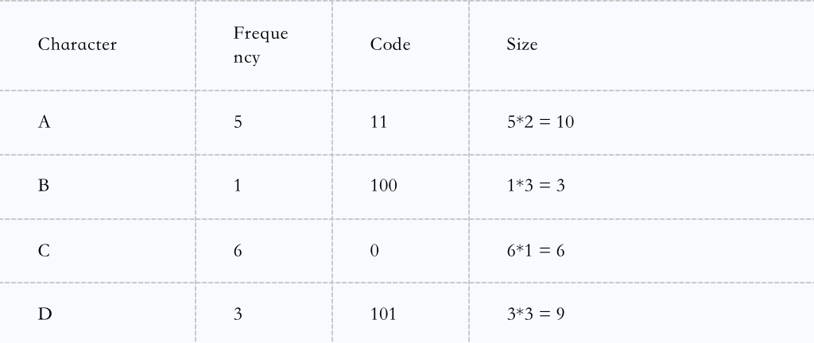

Huffman Coding
Huffman coding is an algorithm utilized for data compression and serves as the fundamental principle behind file compression. we then shall discuss the generalities of fixed- length and variable-length encoding, uniquely decodable codes, prefix rules, and the structure of a Huffman Tree
History
In 1952, MIT graduate David Albert Huffman and his classmates in the information theory course were faced with a decision between writing a term paper or taking a final exam. Their professor, Robert M. Fano, assigned them a term paper focused on the problem of discovering the most effective binary code. Initially, Huffman struggled to demonstrate the efficiency of any codes and contemplated giving up to concentrate on studying for the final exam. However, hehad a breakthrough idea: utilizing a frequency-sorted binary tree. Through quick experimentation, Huffman successfully proved that this method was the most efficient approach. Huffman’s achievement surpassed that of Fano, who had collaborated with Claude Shannon to develop a similar coding technique. Huffman made sure the tree was optimal by building it from the ground up, which stands out in contrast to Shannon-Fano Coding’s top-down method. Introduction Traditionally, characters are represented as sequences of 0s and 1s and stored using 8 bits, which is referred to as ”fixed-length encoding.” Each character occupies the same number of fixed bits, resulting in a consistent storage size.
The Challenge
Reducing Storage Space To minimize the space required for character storage, we can employ ”variable-length encoding.” This technique leverages the varying frequencies of characters within a given text to design an algorithm that represents the text using fewer bits. In variable-length encoding, characters are assigned a variable number of bits based on their frequency in the text. Consequently, some characters may be encoded with a single bit, while others might require two, three, or more bits. However, the challenge with variable-length encoding lies in decoding the encoded data.
The Decoding Dilemma
Ensuring Uniqueness: : Consider the string ”aabacdab” comprising eight characters and utilizing 64 bits of storage using fixed-length encoding. If we examine the frequency of characters in this string (a: 4, b: 2, c: 1, d: 1), we can attempt to represent it using fewer bits by capitalizing on the fact that the character ’a’ occurs more frequently than ’b,’ and ’b’ occurs more frequently than ’c’ and ’d’. Let’s arbitrarily assign the following codes: a: 0 b: 11 c: 100 d: 011 Therefore, using the previously stated codes, the string ”aabacdab” will be encoded as 00110100011011 (0—0—11—0—100—011—0—11). However, the real challenge lies in decoding this encoded string. Decoding ”00110100011011” can lead to ambiguity, resulting in multiple possible interpretations: 0—011—0—100—011—0—11 =¿ adacdab 0—0—11—0—100—0—11—011 =¿ aabacabd 0—011—0—100—0—11—0—11 =¿ adacabab ... To prevent decoding ambiguities, we need to ensure that our encoding adheres to the ”prefix rule,” thereby creating ”uniquely decodable codes.” The prefix rule stipulates that no code should be a prefix of another code. In the previous example, the code 0 is a prefix of 011, violating the prefix rule. If we satisfy the prefix rule, decoding will be distinct. Let’s reconsider the previous example. This time, we will assign codes that comply with the prefix rule for characters ’a,’ ’b,’ ’c,’ and ’d’: a =¿ 0 b =¿10 c =¿110 d =¿111 Using these updated codes,the string ”aabacdab” can be encoded as 00100110111010 (0—0—10—0—110—111—0—10). we can then uniquely encode 00100110111010 back to the original string, ”aabacdab.” Now that we have comprehended variable-length encoding and the prefix rule, let’s delve into Huffman coding. Huffman Coding the technique involves constructing a binary tree composed of nodes, which can either be leaf nodes or internal nodes. At first, all nodes are leaf nodes that store the character and its weight (frequency of appearance).
Huffman coding can be done with the following steps:
- 1. Calculating the frequency of every character in the
string.Frequency of string

- 2. Sorting the characters in increasing order of frequency. These thus are stored in a priority queue
Q.(Characters sorted according to the frequency)
 - 3.Making every unique character a leaf node.
- 4. Creating an empty node z. Assigning the minimum
frequency to the left division of z and assigning the
second minimum frequency to the right division of z.
value of z should be set as the sum of two minimum
frequencies. Getting the sum of the least numbers
 - 5. Removing the two lowest frequencies from Q and adding the total to the list of frequencies (the internal nodes in the previous diagram are indicated by the asterisks *).
- 6. Inserting node z into tree.
- 7. Repeat steps 3 to 5 for all the characters.

 - 8. For each non-leaf node, assign 0 to the left edge and
1 to the right edge.Assign 0 to the left edge and 1 to
the right edge.
 - For sending the above string over a network, we have to send the tree as well as the above-compressed code. The total size is given in the table below
- Without encoding, the total size of the string was 120
bits. After encoding the size is reduced to 32 + 15 + 28
= 75.
